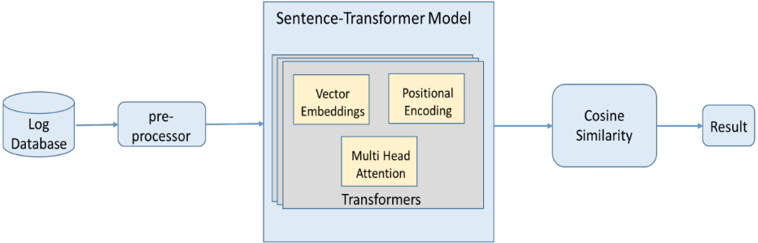
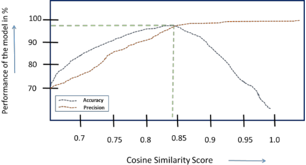
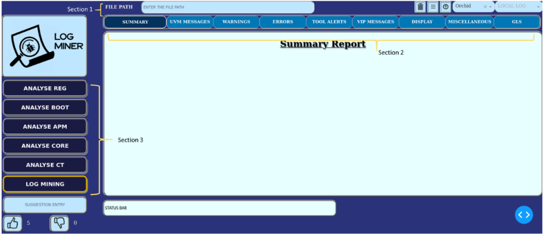
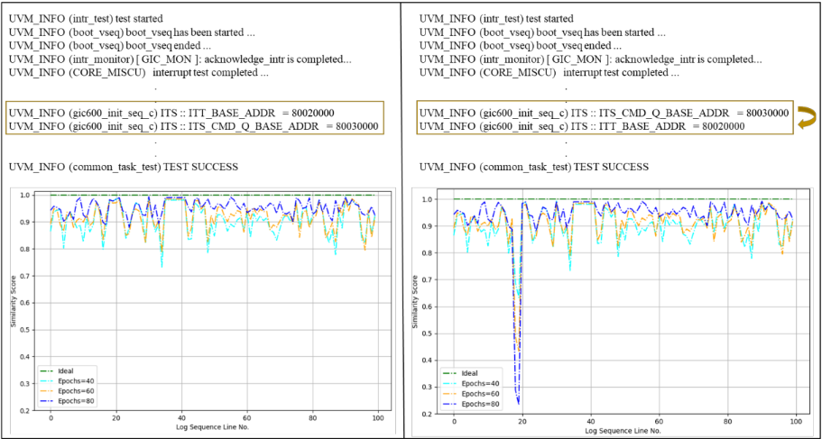

一种新型 ML 驱动的仿真日志调试器
论文针对 SoC 仿真日志体量大、非结构化，且同一测试在不同设计 label/版本间措辞与消息顺序易变，导致人工比对费时易错的问题，提出了交互式调试看板 LogMiner。该工具基于 Python plotly dash 构建，将日志按 UVM 消息、display、warning、error、tool alert、VIP 消息等分栏展示，并提供寄存器编程窗口、boot 序列与 CORE 消息归类及用户反馈窗口。其核心是 Reference generator 与 Log Comparator 两大功能：使用在 SoC 专属日志上以对比损失微调的 Sentence Transformer（基座 all-MiniLM-L6v2）将日志行编码为稠密语义向量，通过 Cosine Similarity 与 golden reference 比对，输出匹配行、缺失行与首个偏离点。在含 5000 条用例的回归套件上验证，最优阈值 0.846 下可正确识别 98% 的相似句对；10K 行日志看板亚秒级打开，100K 行约 5 秒。论文声称该方案可显著缩短调试 TAT（Table-1），并适用于从 IP 到 SoC 的各层级验证。
仿真日志文件庞大、非结构化、缺乏标准格式且充斥冗余低层消息，人工遍历分析以定位错误、检测异常非常耗时易错；此外同一测试在不同 label/版本的设计上运行时，日志措辞与重要消息顺序会变化，直接文本比对困难，难以快速完成失败/通过日志的差异分析与 root cause 定位。
构建交互式 dashboard（Python plotly dash）并结合 AI/ML 技术。两大核心功能：Reference generator 生成所需消息的 golden reference 文件；Log Comparator 基于微调的 Sentence Transformer（基座模型 all-MiniLM-L6v2，用对比损失在 SoC 专属日志行上微调，使相似消息在嵌入空间靠近、不相似消息远离）与 Cosine Similarity，将当前仿真日志与 reference 比对，按阈值判定语义相似与顺序一致性，给出匹配行、缺失行及首个偏离点。日志预处理去除时间戳、工具告警等，并可检测 hung、无限循环、timeout 等异常；看板按消息类型分 tab 展示，避免 grep 式人工检索。
最优 Cosine Similarity 阈值为 0.846（precision 与 accuracy 交点峰值），模型正确识别 98% 的相似句对且不引入过多误报
回归套件共 5000 条测试，分 4 类（SFR 寄存器配置、Core、复杂 block 操作如 back to back traffic/multi-tasking、Hard reset 与 power up-down 的 multi-boot），SoC 含 pcie、usb、power management、GNSS 等模块
日志规模：SFR 测试平均 10K 行，simple core 100K 行，complex core 约 500K 行，multi-boot core 可达 1M 行（不含仿真工具消息，且已按 UVM Message ID 预过滤）
看板加载时间：10K 行日志亚秒级打开；最长 100K 行正常结束的仿真加载约 5 秒
顺序检测：正确排序的序列得分随 epoch 增大趋近 1（理想值），两行被打乱后相似度得分降至接近 0
传统方法与 LogMiner 的调试 TAT 对比基于 20 名工程师（经验 2 至 15 年）、近 2 个项目的数据统计，但 Table-1 的具体数值未在正文文本中给出
相比 Cogita、Splunk、ELK 等更通用、功能更全面的日志工具，LogMiner 专门面向仿真日志定制：支持预处理调控、将日志与 reference 做语义归约比对，并分析顺序流以检测 corner case；相比基于 Levenshtein 编辑距离的 TheFuzz 逐行比对，采用 Sentence Transformer 语义嵌入比较，可容忍不同工程师措辞差异与消息顺序变化，并针对 SoC 日志做领域微调。
相关度级别：high
命中能力域：2.4 设计验证方法学 | 2.7 EDA/验证自动化与 AI 辅助
理由：团队各产品线（LPDDR4/4X 至 LPDDR6、DDR5/MRDIMM、HBM4、UCIe）日常运行大规模 UVM 回归，失败日志与 golden reference 的比对、首个失败点定位与 bug triage 是高频痛点，论文直接命中 2.4 的 debug/回归方法学与 2.7 的 AI 辅助验证自动化；论文明确声称方案适用于从 IP 到 SoC 的各层级验证，与团队 IP 交付场景吻合，且方法（Sentence Transformer + Cosine Similarity）可自建复现，不依赖论文工具本身。
建议动作：深入精读并做内部分享
| 0 | 1 | 2 |
|---|---|---|
| Narasimha Rao Chinni SoC Dev, DVG-1 Samsung Semiconductor India Research Bangalore, India rao.chinni@samsung.com | Sunil Shrirangrao Kashide SoC Dev, DVG-1 Samsung Semiconductor India Research Bangalore, India sunil.sk@samsung.com | Garima Srivastava SoC Dev, DVG-1 Samsung Semiconductor India Research Bangalore, India s.garima@samsung.com |
| 0 | 1 | 2 |
在 SoC（片上系统）设计验证中，仿真日志文件是理解系统行为、查找错误并确保设计正确性的关键组成部分。这些日志捕获了大量信息，包括工具消息、信号活动、断言结果、测试平台（test bench）警告和错误消息。验证工程师在迭代开发过程中依赖这些日志。然而，这些文件庞大的体量和非结构化的特性常常使人工分析既耗时又容易出错。此外，当同一测试在某个……的多个标签（label）上运行时，仿真日志文件的结构、语义和详细程度常常各不相同。
本文提出了一种名为 LogMiner 的交互式仪表盘，它通过提供一种有序的仿真日志文件分析方式，以及将日志文件与参考（reference）进行比对的智能技术，解决了上述问题。它根据类型对消息进行分类，例如 UVM（通用验证方法学）冗余级别（verbosity）、工具消息、VIP（验证 IP）消息和自定义消息。它会分离出 SoC 调试所需的消息，例如启动序列、核心功能消息，还提供一个单独的 Register（寄存器）窗口，其中捕获了所有寄存器编程操作。一个专门的用户反馈窗口有助于从用户处收集反馈，并将这些反馈提供给 AI-ML（人工智能-机器学习）引擎，以用于未来的
设计。直接比较日志文件十分困难。增强功能。
LogMiner 基于 Sentence Transformer 和余弦相似度（Cosine Similarity），从所有可用的日志中收集匹配的选定行。本文建议使用经过微调的 ML 模型。该模型从大量富含上下文的句子中学习，从而能够将整个句子——甚至整个段落——转换为一个能够捕捉语义的固定长度稠密向量（嵌入，embedding）。它会将当前仿真日志与参考模型进行比较，并给出匹配的行以及缺失的行。这有助于快速定位根本原因。
在复杂的硬件和软件系统中，仿真在部署前验证功能方面发挥着至关重要的作用。这些仿真通常会生成包含仿真细节的大型日志文件，帮助设计验证工程师分析设计的功能。然而，这些日志通常是非结构化且体量庞大的，使得人工检查和分析既耗时又容易出错。
日志文件中包含语法警告、运行时警告、致命错误、工具消息、UVM 消息以及其他用户编写的测试平台（test bench）消息，例如 $display 和 $monitor 语句。它还包含带有时间戳的消息，有助于调试过程。手动遍历日志文件并了解流程的状态是一个繁琐的过程。为应对这一挑战，我们提出了一种名为 LogMiner 的交互式仪表板工具，该工具使用 python plotly dash 模块开发，能够以有序的方式显示日志内容。该仪表板还提供更快速的搜索选项，以加快分析速度。LogMiner 还利用人工智能与机器学习（AI/ML）技术，协助对当前日志文件进行高效审查。通过自动化提取有意义的信息，它显著缩短了调试时间，并提高了整体系统的可观测性。
包括 Cogita [4]、Splunk [5]、ELK [6] 在内的现有工具在功能上更为全面，性质上也更为通用，而 LogMiner 则是专门为满足我们的特定需求而定制的。LogMiner 允许对预处理进行调控，将日志推导为参考（reference），并分析其顺序流程，这有助于检测边界情况（corner case），使其有别于现有工具。
本文讨论了该仪表板的设计与特性，重点介绍了所采用的关键 AI/ML 策略，并通过用例展示其在分析日志文件方面的有效性。文中通过一个示例解释了参考的生成与比较过程。日志文件中包含用户编写的消息，这些消息可能因工程师而异，因此本文没有采用直接的文本比较，而是使用 Sentence Transformers 架构，以实现更好的内容层面比较。
测试过程中生成的仿真日志文件通常规模庞大、非结构化且难以人工解读。要分析这些日志文件以识别错误、检测异常或提取相关信息，既困难又耗时。由于缺乏标准化格式，加之存在冗长、底层的消息，这项任务变得更加复杂，使工程师和分析人员难以高效地得出可付诸行动的见解。此外，同一测试在设计的两个不同标签（label）或版本上运行时，其仿真日志文件往往各不相同，这意味着同一句话可能以不同的措辞书写。重要消息的顺序也可能因后续新增的功能而改变。这使得对错误和工具消息进行人工比较与分析变得十分繁琐。本文通过提供一个交互式仪表板来解决这些问题，该仪表板可用于分析错误、警告及其他测试平台（testbench）消息。该仪表板还支持用户从日志文件生成参考（reference），并将其他日志文件与该参考进行比较。其目标是减少人工工作量、提高准确性，并在基于仿真的工作流程中加快决策速度。
Vaswani 等人 [1] 表明，一个完全基于注意力机制构建的模型能够借助多头自注意力（multi-head self-attention）捕捉整句范围内的关联关系，从而胜过循环神经网络（RNN）。这一突破不仅大幅加快了训练速度，还为大规模预训练模型奠定了基础，而这些模型已经重塑了自然语言处理（NLP）研究以及依赖 NLP 的各类应用。
TheFuzz [2] 是一个可用于行比较的 Python 包，其基于 Levenshtein 算法。它可以根据使两个句子相互匹配所需的调整次数来判断这两个句子是否相同，但它无法理解上下文层面的意义和语义含义。
Reimers 和 Gurevych [3] 提出了 SBERT（Sentence-BERT），这是 BERT 的孪生（Siamese）版本，可生成固定大小的句子嵌入（sentence embedding），用于高效的语义比较测试。SBERT 在自然语言推理（NLI）和语义文本相似度（STS）数据集上进行的微调，使其能够在保持较高语义准确性的同时，实现基于余弦相似度的快速短语比较。他们的研究结果表明，SBERT 相比交叉编码器（cross-encoder）实现了显著的加速，因而适用于大规模检索和聚类应用。这项工作为现代句子嵌入模型奠定了基础，如今这些模型已在 NLP 中得到广泛应用。
为解决问题定义中提到的痛点，我们提出了一种名为 LogMiner 的工具，该工具基于 AI-ML 算法。该工具具有两大特性：参考生成器（Reference generator）和日志比较器（Log Comparator），二者基于机器学习技术 Sentence Transformers [7] 和余弦相似度（Cosine Similarity）[3]。参考生成器可以创建所需消息的参考文件。比较器用于将当前的仿真日志消息与模型训练时所用的黄金参考（golden reference）进行比较。比较器基于机器学习技术 Sentence-Transformers——一个利用 Hugging-Face [8] 上可用软件包进行微调的机器学习模型——以及余弦相似度。因此，LogMiner 有助于根因分析，并缩短调试中的周转时间（Turn Around Time）。它还将不同种类的消息分类到不同的标签页中，通过避免使用 grep/搜索技术，使用户能够快速获得特定消息。消息。该工具是三星半导体的专有工具，不会以任何方式向 Accellera 做出贡献。
Sentence-Transformers 是 BERT 架构的扩展版本。BERT 是 Google 开发的语言模型，它使用 Transformer 架构来理解文本中词语的含义和上下文。Sentence Transformer 的主要用途是处理那些需要对句子中词语进行深入上下文理解的任务。它常用于数据去重、匹配用户输入，以及通过提供相似度得分（余弦相似度，Cosine Similarity）来比较存在细微差异的文本等任务。余弦相似度用于根据阈值查找匹配的行。下面的图 1 描述了所提出方案的高层框图。

日志文件经过预处理，去除无关消息、工具警告、时间戳等，与参考文献中的做法类似。它还能检测出挂起（hung）、无限循环、超时等异常行为。预处理后的日志被送入 Sentence-Transformer 模型，该模型创建向量嵌入（vector embeddings），将文本词元（token）转换为用于模型输入的稠密语义表示；位置编码（positional encoding）则添加关于词元顺序的信息，使 Transformer 能够理解句子结构。多头注意力（multi-head attention）让模型能够同时关注不同的上下文关系，从而捕捉句子中更丰富的依赖关系。

模型会为特定的句子序列给出一个总体得分，可以使用余弦相似度在理想阈值下将其与参考序列进行比较。理想阈值可以根据模型在检测相似与不相似句子对时的精确率（precision）和准确率（accuracy）来选取。该余弦相似度将帮助我们判断两个句子序列是否语义相似，这一判断结果被称为 Result。
我们采用 Sentence Transformers 基础模型 'all -MiniLM-L6v2' 作为基础嵌入模型，并在我们 SoC 特定的日志行上对其进行微调，以更好地捕捉与领域相关的语义。微调过程使用对比损失函数（contrastive loss function），训练模型在嵌入空间中将语义相似的日志消息拉近，同时将不相似的消息推远。这种方法使模型能够学习到我们硬件日志中特有的细微上下文模式，从而实现更准确的相似度检测和下游分析。
图 2 展示了模型的精确率和准确率随余弦相似度得分变化的曲线。精确率是指被预测为“相似”的句子对中实际正确的百分比。准确率是指模型成功找到的实际“相似”句子对的百分比。我们发现当阈值（Threshold）取 0.846 时，准确率与精确率曲线在峰值处相交，这意味着通过选择最优阈值，模型达到了最佳平衡，正确识别了 98% 的相似句子对，同时没有引入过多的误报（false positives）。
图 3 展示了该仪表盘的布局。日志文件内容经过有条理的布局与分类，为用户提供了一种更好的方式来浏览内容并提取所需信息。按钮和搜索键可根据验证团队的需求或设计规范进行高度定制。LogMiner 有 2 个重要区域。右侧的区域 2 由水平标签页组成，日志文件的内容在其中被相应地分类为 UVM 消息、display 消息、警告、错误、工具告警和 VIP 消息。第一个标签页显示摘要，UVM_MESSAGES 标签页显示主要测试序列消息。ERRORS 标签页显示仿真失败消息。此外还有一个 GLS 标签页，用于显示 GLS 参数，例如建立-保持时间违例等。

左侧的区域 3 包含徽标和特殊分析按钮。Register analyzer（寄存器分析器）会打印已执行的寄存器编程数据。所有启动（boot）消息和 CORE 仿真消息也同样被分类开来。LogMining 按钮具有特殊功能，用户可以将所加载的日志与黄金参考模型（golden reference model）进行比对。
在本节中，我们将讨论测试策略与结果。首先，我们选取日志文件中的几行内容，展示通过日志与失败日志之间的对比。接下来，我们给出一张用于日志行序列顺序检测的图。最后，我们描述回归测试套件与测试方法，并将传统方法的调试时间与我们的解决方案进行对比。
UVM_INFO (intr_test) test started UVM_INFO (intr_test) test started UVM_INFO (boot_vseq) boot_vseq is started UVM_INFO (boot_vseq) boot_vseq has been started ... UVM_INFO (boot_vseq) boot_vseq is ended UVM_INFO (boot_vseq) boot_vseq ended .. UVM_INFO (intr_monitor) [GIC_MON ]: acknowledge_intr is done UVM_INFO (intr_monitor) [ GIC_MON ]: acknowledge_intr is completed... UVM_INFO (CORE_MISC_TMU) tmu interrupt test is done UVM_INFO (CORE_MISCU) interrupt test completed ... UVM_INFO (CORE_MISC_common_task) //[set_check_temperature] Done UVM_INFO (CORE_MISC_common_task)///[set_check_temperature] completed UVM_INFO (intr_monitor) [ GIC_MON ] Interrupt clear checker .. finished UVM_INFO (intr_monitor) [ GIC_MON ] Interrupt clear checker .. done UVM_INFO (common_task_test) TEST PASSED UVM_INFO (common_task_test) TEST SUCCESS
Log 1 参考张量 tensor([[ 1.0000, -0.0215, 0.0151, 0.1432, 0.0434, -0.0790, 0.1942, -0.0461, 0.0366, -0.0275]. [-0.0215, 1.0000. 0.5328, 0.0970, 0.0266, 0.1088, 0.1062, 0.1502, 0.7880, 0.3647], [0.0151, 0.5328, 1.0000. 0.1351, 0.1253, 0.1386, 0.2492, 0.1668, 0.4053, 0.0771], [0.1432, 0.0970, 0.1351, 1.0000. 0.2548, 0.2159, 0.5935, 0.1800, 0.0231, 0.0659], [0.0434, 0.0266, 0.1253, 0.2548, 1.0000. 0.3895, 0.4056, 0.6475, 0.0973, 0.0467], [-0.0790, 0.1088, 0.1386, 0.2159, 0.3895, 1.0000, , 0.3047, 0.4086, 0.1496, 0.0533], [0.1942, 0.1062, 0.2492, 0.5935, 0.4056, 0.3047, 1.0000, 0.1329,0.0612, 0.0494], [-0.0461, 0.1502, 0.1668, 0.1800, 0.6475, 0.4086, 0.1329, 1.0000, 0.1272, 0.0327]]) 仿真矩阵
UVM_INFO (intr_test) test started UVM_INFO (boot_vseq) boot_vseq is started UVM_INFO (intr_test) test started UVM_INFO (boot_vseq) boot_vseq is ended UVM_INFO (boot_vseq) boot_vseq is started UVM_INFO (intr_monitor) [ GIC_MON ]: acknowledge_intr is done UVM_INFO (boot_vseq) boot_vseq is ended UVM_INFO (CORE_MISC) interrupt test is done UVM_INFO (intr_monitor) [ GIC_MON ]: acknowledge_intr is done UVM_INFO (boot_vseq) boot_vseq at init_sys_vseq started ... UVM_INFO (CORE_MISC_TMU) tmu interrupt test is done UVM_INFO (boot_vseq) init_Inpu_ncpu is started .. UVM_INFO (CORE_MISC_common_task) ///[set_check_temperature] Done UVM_INFO (CORE_MISC_common_task) ///[set_check_temperature]Done UVM_INFO (intr_monitor) [ GIC_MON ] Interrupt clear checker .. finished UVM_INFO (intr_monitor) [ GIC_MON ] Interrupt clear checker .. finished UVM_INFO (common_task_test) TEST PASSED UVM_INFO (common_task_test) TEST PASSED Reference Log 2 tensor([[ 1.0000, -0.0215, 0.0151, 0.1432, 0.0434, 0.0366, -0.0275, -0.0790, 0.1942, -0.0461], [-0.0215, 1.0000 0.5328, 0.0970, 0.0266, 0.7880, 0.3647, 0.1088, 0.1062, 0.1502], [0.0151, 0.5328, 1.0000 0.1351, 0.1253, 0.4053, 0.0771, 0.1386, 0.2492, 0.1668], [0.1432, 0.0970, 0.1351, 1.0000 0.2548, 0.0231, 0.0659, 0.2159, 0.5935, 0.1800], [0.0434, 0.0266, 0.1253, 0.2548, 1.0000 0.0973, 0.0467, 0.3895, 0.4056, 0.6475], [-0.0790, 0.1088, 0.1386, 0.2159, 0.3895, 0.1496 0.0533 1.0000. 0.3047, 0.4086], [0.1942, 0.1062, 0.2492, 0.5935, 0.4056, 0.0612, 0.0494 0.3047 1.0000 0.1329], [-0.0461, 0.1502, 0.1668, 0.1800, 0.6475, 0.1272, 0.0327, 0.4086. 0.1329 1.0000]]) Simulation Matrix
图 4 和图 5 展示了利用基于参考日志的张量（仿真矩阵）对推导出的通过日志与失败日志所进行的对比分析。该张量对日志句子之间的两两相似度得分进行编码，使模型能够同时判断语义等价性以及对预期序列的遵循程度。通过解读该矩阵，算法能够识别出内容或顺序上的任何偏差；此类不匹配会被标记为失败指示，从而使系统能够可靠地预测某条日志序列应被判定为通过还是失败。

图 6 和图 7 展示了在评估模型且不使用参考日志序列进行比对的情况下，针对包含 100 行日志的顺序检测曲线。随着训练轮数（epoch）的增加，对于顺序正确的序列，模型的顺序检测得分会趋近于 1（理想值）；而对于顺序错误的序列，则会趋近于 0。图 6 展示了顺序正确序列的曲线。图 7 展示了一个其中两行被打
现在我们描述利用回归测试套件得到的我们方案的初步结果。测试中考虑了包含 5000 个测试用例的回归测试套件。为了衡量 LogMiner 的性能，在一个由多个模块（pcie、usb、电源管理、GNSS 等）组成、启动时间为 8ms、测试特定运行时间为 2ms 的 SoC 中考虑了四种类型的测试。第一种测试是简单的寄存器配置测试，用于配置某个模块所需的寄存器。在该测试中，不需要芯片启动，但会进行芯片复位和初始化。第二种是 Core 测试，其中对模块/特性特定的操作进行仿真。第三种测试执行复杂的模块操作，例如背靠背流量、多任务处理等。最后一种测试通过施加硬复位和上电-断电循环来实现多次启动。就仿真日志的行数而言，SFR 测试平均包含 10K 行，简单 core 测试包含 100K 行，复杂 core 测试可能有约 500K 行，多次启动 core 测试可能达到 1M 行。这些行数不包括来自仿真工具的消息。此外，日志经过预处理，仅根据 UVM Message ID 过滤出所需的 UVM 消息。
仪表盘（Dashboard）的加载时间取决于仿真的规模，即行数以及所占用的磁盘空间。预处理器（Pre-processor）有助于避免因仿真挂起、UVM_TIMEOUT、无限循环/等待语句等导致的意外日志大小。对于 10K 行的仿真，Dashboard 会在几分之一秒内打开。而对于包含 100K 行、正常结束的最长仿真，加载时间约为 5 秒。下文提到的 LogMiner 周转时间（TAT）汇总了加载、预处理和比对时间。
下方的表 1 显示了针对上述 4 种测试，找出失败日志与通过日志之间实际差异所需的 TAT。我们在过去 2 个项目中，在一个由 20 名经验水平各异（从 2 年到 15 年不等）的工程师组成的团队中，计算了传统调试方法的 TAT。如上所述，包含 5000 个测试的回归测试套件被分为 4 类。按照传统方法，收集所有用户的调试时间并取平均值。在 LogMiner 方法中，TAT 由一个 python 脚本计算。
| Sl No. | Test | Traditional Method.Log size (lines) | Traditional Method.TAT | LogMiner.Log size (lines) | LogMiner.TAT |
|---|---|---|---|---|---|
| 1 | A basic SFR test | 10K | 5 min | 248 | 1 min |
| 2 | Simple CORE test | 100K | 30 min | 2.7k | 5 min |
| 3 | Complex CORE test | 500K | 1.5 hrs | 13.5k | 8 min |
| 4 | Complex CORE Multi Boot test | 1M | 3 hrs | 24.3k | 12 min |
| Sl No. | Test | Traditional Method.Log size (lines) | Traditional Method.TAT | LogMiner.Log size (lines) | LogMiner.TAT |
我们的解决方案可针对 SoC、IP、子系统级项目以及其他软件测试日志进行定制。主要应用包括
凭借上述令人期待的特性，LogMiner 可应用于众多仿真平台。凡是以日志分析作为主要调试手段的场合，它都可以扩展应用于硅后（post-silicon）验证和硬件仿真（emulation）。现代系统会从众多服务、容器或边缘设备中生成日志，LogMiner 均可用于这些场景。
该工具当前的功能范围是识别仿真的首个偏差点。这并不能指出根本原因。作为未来的增强方向，我们正在开发用于识别根本原因的增强功能，即确定故障的首要来源。
LogMiner 简化了日志文件与参考模型之间的比较，并缩短了完成完整比较所需的周转时间（Turn Around Time），而这一完整比较往往是判定故障的主要决定性差异。该工具基于 Sentence Transformers 机器学习（ML）技术，该技术在分析 SoC 回归测试中的海量数据方面广为流行。系统采用余弦相似度（Cosine Similarity）来度量日志与参考之间的相似性。它将不同种类的消息分门别类地置于不同的标签页中，使用户能够快速获取特定消息，而无需借助 'grep' 技术来提取所需消息。该解决方案适用于从 IP 到 SoC 的各个验证层级。